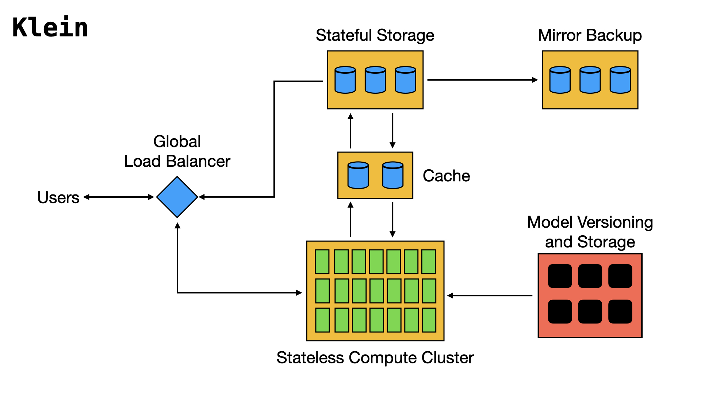

Course Information
Course Name: Algorithmic Problem Solving
Domain: Distributed AI Model Serving and Inference Infrastructure
Course Code: 24ECSE309
Faculty: Prakash Hegade
University: KLE Technological University, Hubballi-31
Introduction
We are building a globally distributed AI inference platform that serves machine learning models with high availability, low latency, and automatic scalability. It supports multi-tenant deployments, dynamically allocating GPUs based on model demand. A hierarchical load balancing system routes requests from users to regions, then to optimal GPU nodes. All inference inputs and outputs are stored for traceability, and stateless compute with replicated storage ensures fault tolerance. The platform handles diverse input types (text, images, video, audio, time series) and scales horizontally and vertically to match workload fluctuations.
System Properties
- Distributed Worldwide Access
- Highly Available
- Horizontally and Vertically Scalable
- Low Latency
- Observability
- Security and Access Control
Industries & Use Cases
- E-Commerce: Real-time recommendations, fraud detection, image-based search
- Healthcare: Diagnostic AI (X-rays, MRIs), remote patient monitoring
- Autonomous Vehicles: Object detection, path prediction, fleet inference
- Social Media: Content moderation, feed ranking, voice/video filters
- AI-as-a-Service: Multi-tenant model hosting, usage-based billing
- Finance: Fraud detection, market prediction, document OCR
- Gaming: AI NPCs, real-time voice translation, behavior modeling
- Manufacturing/IoT: Sensor anomaly detection, predictive maintenance
- Telecom: Network optimization, voice assistant services
- Security/Surveillance: Face recognition, activity detection
Architecture
In today's world of rapidly evolving AI models and increasing demand, traditional single-server inference setups are insufficient. Distributing AI model serving across multiple nodes and regions becomes essential to achieve high availability, handle large traffic volumes with low latency, and ensure fault tolerance. A distributed architecture allows dynamic scaling, efficient resource utilization (like GPUs), and resilience against failures, providing a robust foundation for serving AI models globally.
Explore Key Concepts
- Distributed Load Balancing
- Rate Limiting and Backpressure
- Multi-tenant GPU Allocation
- Merkle Tree Model Versioning
- Content-Addressed Storage & Bloom Filters
- Monitoring & Alerting
- Security and Access Control
- Trace Storage Compression
- Communication Protocols
- LSM Tree for Write Optimized Caches
- Dynamic Load Prediction
Student Details
Name: Chinmay J S
Branch: CSAI
USN: 01FE22BCI351
College: KLE Technological University, Hubballi
Roll: 164